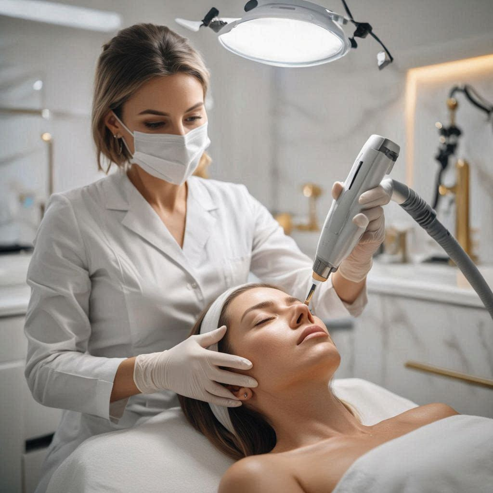
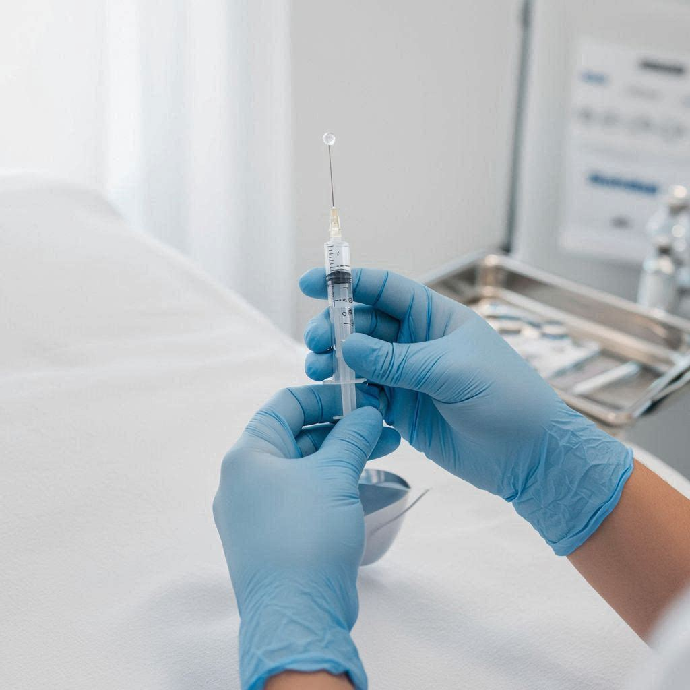
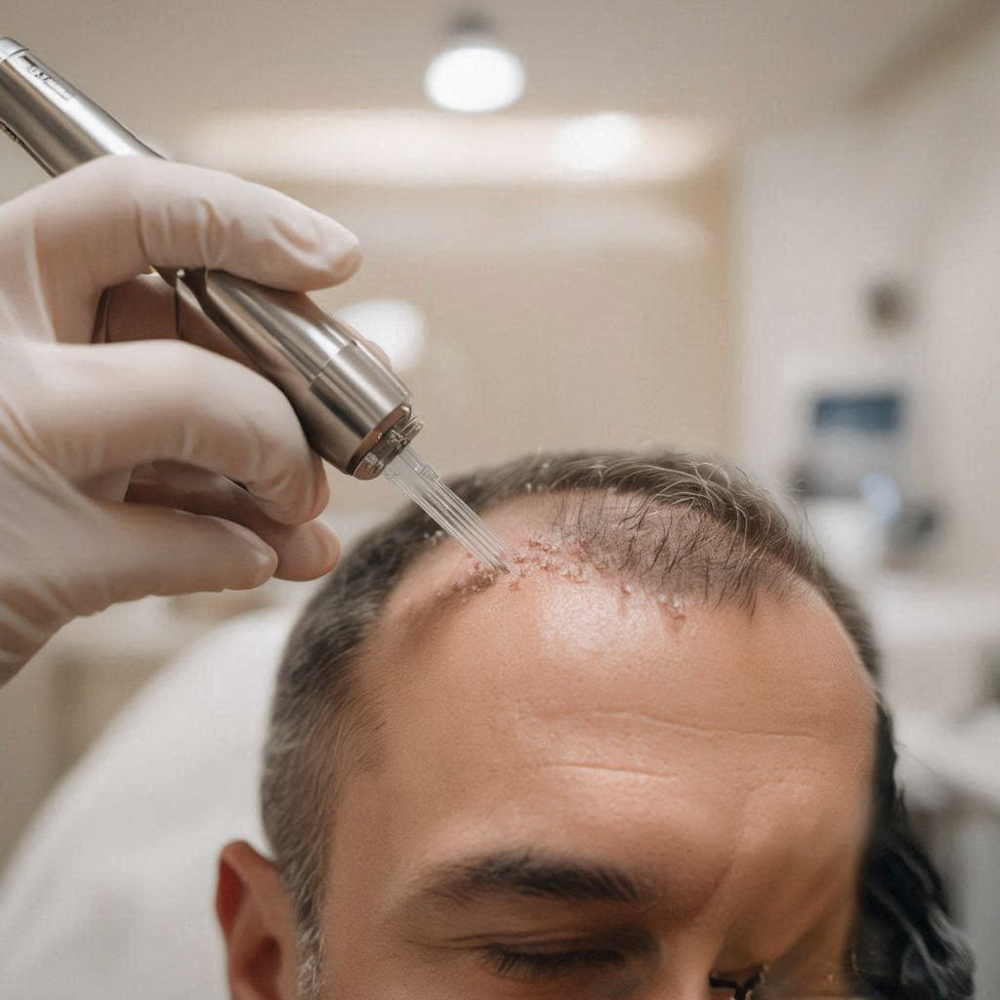
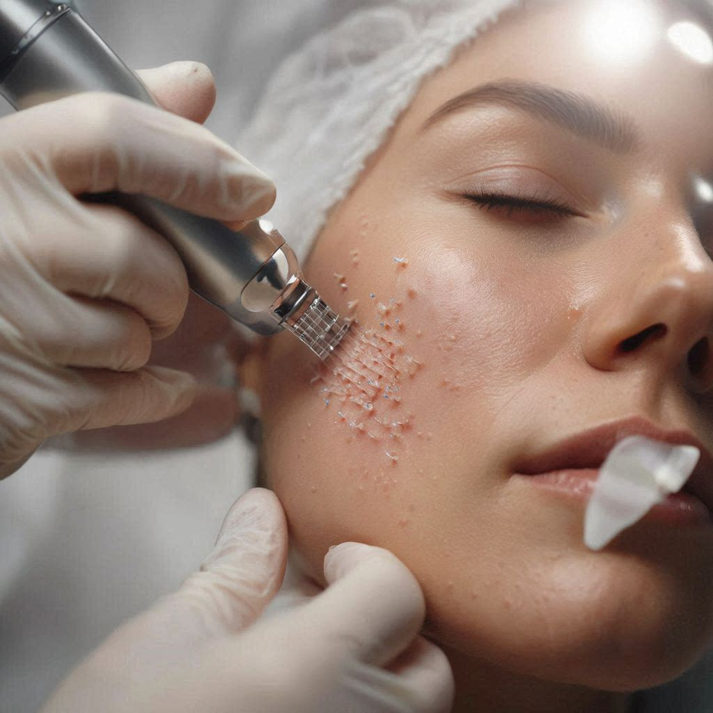

Our Services
Advanced aesthetic treatments for face, body, and hair — tailored with precision, technology, and a luxury touch.
Advanced Laser & Energy Devices
Technology-driven treatments designed to lift, tighten, resurface, and improve overall skin quality.

Laser Skin Rejuvenation Price TBA
Refine, renew, and restore your skin with advanced laser technology designed to improve tone, texture, and radiance. This treatment stimulates collagen production while reducing imperfections for a visibly smoother, more luminous complexion.
Book ConsultationLaser for Pigmentation Price TBA
Target dark spots, melasma, and sun damage with precision-based laser technology. Achieve a brighter, more even skin tone while restoring clarity and youthful glow.
Book ConsultationLaser for Acne & Acne Scars Price TBA
A results-driven solution to reduce active acne, calm inflammation, and soften the appearance of scars — revealing clearer, healthier-looking skin over time.
Book ConsultationLaser Hair Removal Price TBA
Experience long-term hair reduction with advanced laser systems designed for comfort, efficiency, and smooth, flawless skin.
Book ConsultationUltraformer Full Face Lift (HIFU) Price TBA
A non-invasive lifting treatment that reaches deep structural layers of the skin, delivering visible tightening, contouring, and rejuvenation — without downtime.
Book ConsultationUltraformer Face + Neck Price TBA
Comprehensive HIFU treatment targeting the full face and neck for visible lifting, tightening, and rejuvenation in a single session.
Book ConsultationUltraformer Double Chin Price TBA
Targeted HIFU treatment focused on the submental area to reduce double chin and improve jawline definition without surgery.
Book ConsultationUltraformer Body Tightening Price TBA
Non-invasive body HIFU treatment to firm and tighten skin, improve texture, and support body contouring goals.
Book ConsultationMorpheus8 Face (RF Microneedling) Price TBA
A powerful combination of microneedling and radiofrequency that remodels collagen, tightens skin, and improves texture for a refined, lifted appearance.
Book ConsultationMorpheus8 Neck Price TBA
RF microneedling targeted at the neck and décolletage to tighten, firm, and smooth skin texture in the delicate neck area.
Book ConsultationMorpheus8 Body Price TBA
Body RF microneedling to address skin laxity, stretch marks, and texture irregularities on the abdomen, arms, thighs, or other areas.
Book ConsultationPackages in This Category
- Full Face Lifting Package — Price TBA
- Skin Tightening Program — Price TBA
- Acne & Texture Repair Program — Price TBA
Facial Treatments
Customized skincare protocols to restore hydration, smooth texture, support collagen, and reveal radiant skin.
Hydrafacial / Deep Hydration Price TBA
A multi-step facial that deeply cleanses, exfoliates, and infuses the skin with intense hydration — leaving your skin instantly refreshed, plump, and radiant.
Book ConsultationChemical Peels Price TBA
Advanced exfoliation treatments designed to improve skin texture, reduce imperfections, and reveal a smoother, brighter complexion.
Book ConsultationMicroneedling Price TBA
Stimulates natural collagen production to improve skin firmness, texture, and overall quality — perfect for rejuvenation and acne scars.
Book ConsultationMicroneedling + Exosomes Price TBA
A next-level regenerative treatment that accelerates healing, enhances results, and boosts skin renewal for visibly younger, healthier skin.
Book ConsultationGlass Skin Facial Price TBA
Achieve a flawless, luminous complexion with this signature treatment focused on hydration, smoothness, and glow.
Book ConsultationAcne Control Facial Price TBA
A targeted facial designed to calm active breakouts, reduce inflammation, and regulate oil production for clearer, healthier skin.
Book ConsultationAnti-Aging Facial Price TBA
A deeply nourishing treatment that targets fine lines, loss of elasticity, and dullness to restore a more youthful, radiant complexion.
Book ConsultationDermaplaning Price TBA
A gentle exfoliation technique that removes dead skin cells and fine hair, instantly enhancing skin smoothness and product absorption.
Book ConsultationHydra Lips Price TBA
A targeted lip treatment that hydrates, smooths, and enhances lip texture — leaving lips softer, fuller, and naturally radiant.
Book ConsultationSmart Microcurrent (Face Lifting & Toning) Price TBA
A non-invasive lifting treatment that tones facial muscles, enhances contour, and delivers an instant tightening effect.
Book ConsultationLash Lift & Tint Price TBA
Enhance your natural lashes with a lifted, lengthened, and deeply defined appearance — including tint for extra depth and drama.
Book ConsultationBrows Design + Lamination & Tint Price TBA
A complete brow transformation — custom shaping, lamination for brushed-up fullness, and tinting for defined, polished brows.
Book ConsultationBrows Wax + Tint Price TBA
Clean, defined brows shaped with precision waxing and enhanced with tint for a neat, polished finish.
Book ConsultationPackages in This Category
- Skin Reset Program — Price TBA
- Glass Skin Package — Price TBA
- Acne Program — Price TBA
Injectables
Refined injectable treatments that enhance natural beauty and facial balance.

Botox Treatments
Botox — Full Face Price TBA
Smooth fine lines and prevent deeper wrinkles while maintaining natural facial expression. A refined approach to aging gracefully.
Book ConsultationBotox — Forehead Lines Price TBA
Target horizontal lines across the forehead for a smoother, more refreshed appearance.
Book ConsultationBotox — Frown Lines Price TBA
Soften the "11" lines between the brows for a more relaxed, approachable appearance.
Book ConsultationBotox — Crow's Feet Price TBA
Reduce fine lines radiating from the outer corners of the eyes for a brighter, more youthful look.
Book ConsultationBotox — Lip Flip Price TBA
Subtly enhance the upper lip for a fuller, more defined appearance without adding volume.
Book ConsultationBotox — Masseter / Jaw Slimming Price TBA
Relax the jaw muscles to create a slimmer, more contoured jawline.
Book ConsultationDermal Fillers
Lip Enhancement Price TBA
Create balanced, soft, and naturally enhanced lips tailored to your facial harmony.
Book ConsultationJawline Contouring Price TBA
Define and sculpt the jawline for a more structured and elegant facial profile.
Book ConsultationChin Projection Price TBA
Enhance facial proportions and balance with subtle, precise chin augmentation.
Book ConsultationCheek Volume Price TBA
Restore youthful volume and contour, lifting and enhancing the mid-face.
Book ConsultationUnder Eye (Tear Trough) Price TBA
Brighten and refresh the under-eye area, reducing hollowness and tired appearance.
Book ConsultationNasolabial Folds Price TBA
Soften the lines running from nose to mouth, creating a smoother, more youthful appearance.
Book ConsultationFacial Balance Reset (Hyaluronidase) Price TBA
A precise enzyme-based treatment to dissolve unwanted or uneven hyaluronic acid filler — restoring natural facial harmony and balance.
Book ConsultationPackages in This Category
- Full Face Rejuvenation — Price TBA
- Lips + Chin Combo — Price TBA
- Jawline Definition — Price TBA
Non-Surgical Thread Lift & Facial Contouring
A minimally invasive lifting technique designed to reposition and support facial tissues, creating a more lifted, defined, and youthful appearance — without surgery. Our customized thread lift protocols enhance facial contours, improve skin laxity, and stimulate natural collagen production for long-term results.
Fox Eyes Signature Lift Price TBA
A signature thread lift technique that elevates and elongates the outer eye area for a lifted, almond-shaped look — without surgery.
Book ConsultationJawline Thread Lift Price TBA
Redefine the jawline and reduce jowling with precise thread placement that tightens and lifts the lower face for a sharper, more contoured profile.
Book ConsultationMidface Lift Price TBA
Restore youthful cheek volume and midface elevation with threads that reposition and support the central facial structures for a naturally refreshed look.
Book ConsultationNeck Thread Lift Price TBA
Tighten and lift loose neck skin and bands, improving neck contour and restoring a smoother, more elegant profile without surgery.
Book ConsultationFull Face Thread Lift Price TBA
A comprehensive non-surgical lift addressing brows, midface, jawline, and neck in a single protocol — delivering a full facial rejuvenation with natural-looking, lasting results.
Book ConsultationCollagen Regeneration & Skin Density Therapy
Advanced injectable treatments that stimulate your body's natural collagen production, restoring skin density, improving texture, and creating long-lasting rejuvenation. Our protocols are designed to rebuild the skin from within, delivering gradual, natural, and elegant results.
Sculptra Price TBA
A poly-L-lactic acid injectable that gradually stimulates collagen production to restore facial volume and improve skin quality over time.
Book ConsultationRadiesse Price TBA
A calcium hydroxylapatite filler that provides immediate volume while stimulating long-term collagen and elastin production for lasting rejuvenation.
Book ConsultationHyperdilute Radiesse Price TBA
Radiesse diluted with saline for a spreadable, skin-renewing treatment that improves skin quality, tightness, and texture across larger areas.
Book ConsultationFull Face Collagen Therapy Price TBA
A comprehensive biostimulation protocol using 2 vials to address full facial aging — restoring volume, improving skin density, and stimulating deep collagen renewal.
Book ConsultationNeck Collagen Renewal Price TBA
A targeted biostimulation protocol for the neck using 2 vials — improving skin laxity, texture, and overall neck appearance from within.
Book ConsultationNon-Surgical Butt Augmentation — Sculptra Price TBA
A non-invasive approach to enhance gluteal volume and shape using Sculptra — stimulating natural collagen for gradual, natural-looking results over multiple sessions (10 vials).
Book ConsultationNon-Surgical Butt Augmentation — Radiesse Price TBA
Enhance and shape the buttocks with Radiesse — providing immediate lift and volume while stimulating long-term collagen production (10 vials).
Book ConsultationHair Restoration & Scalp Treatments
Advanced regenerative treatments designed to support scalp health, reduce thinning, and stimulate stronger-looking hair.

Hair Loss Treatment Price TBA
A personalized approach to reduce hair thinning and support stronger, healthier hair growth.
Book ConsultationScalp Microneedling Price TBA
Stimulates the scalp and improves circulation, enhancing hair growth potential.
Book ConsultationExosomes for Hair Restoration Price TBA
A regenerative treatment that supports follicle health and promotes visible hair density and strength.
Book ConsultationGrowth Factor Therapy Price TBA
Advanced bio-stimulation designed to reactivate hair follicles and improve scalp health.
Book ConsultationHair Regeneration Therapy Price TBA
Complete scalp restoration protocol targeting hair renewal, growth, and strength at the cellular level (3 sessions).
Book ConsultationHead Spa Price TBA
A deeply relaxing scalp treatment that combines cleansing, massage, and nourishing therapies to improve circulation, relieve tension, and promote scalp health.
Book ConsultationPackages in This Category
- Hair Growth Program — Price TBA
- Anti-Hair Loss Protocol — Price TBA
- Exosomes + Microneedling Combo — Price TBA
- Scalp Detox + Stimulation — Price TBA
Body Treatments
Machine-based body treatments focused on contouring, tightening, and improving skin appearance.

Radiofrequency Skin Tightening Price TBA
Improves skin laxity and firmness on the face and superficial layers by stimulating collagen production — ideal for tightening and rejuvenation.
Book ConsultationRadiofrequency Body Tightening Price TBA
Deep radiofrequency energy applied to larger body areas to firm loose skin, reduce cellulite appearance, and improve overall body texture.
Book ConsultationUltrasound Fat Reduction Price TBA
Targets localized fat deposits using advanced technology to contour and refine body shape.
Book ConsultationBody Sculpting Price TBA
A non-invasive solution to shape, tone, and enhance body contours.
Book ConsultationCellulite Reduction Price TBA
Improves the appearance of cellulite by smoothing and firming the skin.
Book ConsultationSkin Tag Removal Price TBA
Safe, precise removal of skin tags using advanced techniques — leaving skin smooth and clear with minimal discomfort.
Book ConsultationEMS Muscle Stimulation Price TBA
Enhances muscle tone and definition through advanced stimulation technology.
Book ConsultationSpray Tanning (Machine-Based Bronzing) Price TBA
Achieve a flawless, sun-kissed glow with an even, natural-looking finish — without UV exposure.
Book ConsultationPackages in This Category
- Abdomen Sculpt Program — Price TBA
- Cellulite Reduction Program — Price TBA
- Full Body Contouring — Price TBA
- Glow Bronzing Package — Price TBA
Vitamin & Wellness Therapy
Support energy, recovery, glow, and overall wellness with targeted vitamin-based treatments.
Vitamin Injections Price TBA
Targeted nutrient support to enhance energy, metabolism, and overall vitality.
Book ConsultationIV Therapy Price TBA
A powerful infusion of vitamins and antioxidants designed to boost hydration, immunity, and glow.
Book ConsultationAnti-Aging Vitamin Protocol Price TBA
Support skin health and longevity from within with advanced nutrient combinations.
Book ConsultationFat Burning Boosters Price TBA
Optimize metabolism and support body composition with targeted injectable support.
Book ConsultationPackages in This Category
- Energy Booster Program — Price TBA
- Skin Glow IV Package — Price TBA
- Metabolism Boost Plan — Price TBA
Not Sure Which Treatment Is Right for You?
Book a consultation and receive a personalized treatment recommendation based on your goals.
Book Consultation